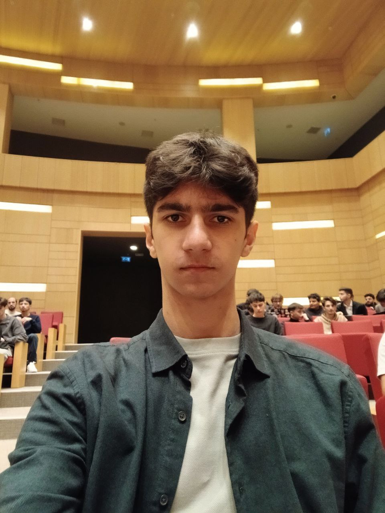
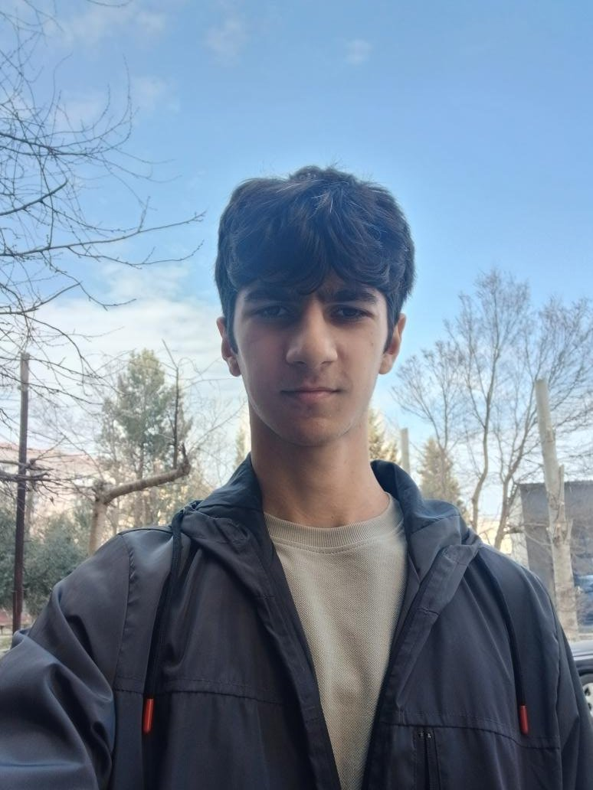

AI Lumiere
Founder, leader, owner 100%
Hackathon team + отдельное направление, где запускаем собственные продукты.
Telegram каналаFounder • Builder • Community Leader
Мне 16 лет. По нации лезгин. Общаюсь на русском, английском, турецком/азербайджанском и лезгинском. Открыт к новым коллаборациям и идеям.


Founder, leader, owner 100%
Hackathon team + отдельное направление, где запускаем собственные продукты.
Telegram каналаFounder, owner 100%
AI-агент для твоего браузера.
superwizard.orgLeader
Комьюнити/инициатива в web3 направлении.
Telegram проектаПиши в Telegram @SafiyevMarat или в X.
Социальные сети